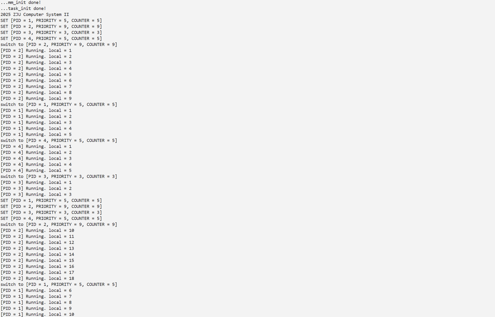

Lab6：RV64内核线程调度¶
1 实验目的¶
- 了解线程概念，并学习线程相关结构体，并实现线程的初始化功能
- 了解如何使用时钟中断来实现线程的调度
- 了解线程切换原理，并实现线程的切换
- 掌握简单的线程调度算法，并完成简单调度算法的实现
2 实验环境¶
- Ubuntu 22.04 / Ubuntu 24.04 / Debian 12
3 实验步骤¶
3.1 准备工程¶
在private_kdefs.h中加入了宏定义，在_start中跳转到start_kernel前调用mm_init进行内存管理初始化，将 .bss.stack 段加到_sbss之前，并在head.S 末尾放置了.bss.stack段内容
3.2 实现线程调度¶
3.2.1 初始化线程¶
实现task_init函数，软件的指导都给的相当详细了，不做赘述
void task_init(void) {
srand(2025);
// 1. 调用 alloc_page() 为 idle 分配一个物理页
idle = (struct task_struct *)alloc_page();
// 2. 初始化 idle 线程：
// - state 为 TASK_RUNNING
// - pid 为 0
// - 由于其不参与调度，可以将 priority 和 counter 设为 0
idle->state = TASK_RUNNING;
idle->pid = 0;
idle->priority = 0;
idle->counter = 0;
// 3. 将 current 和 task[0] 指向 idle
current = idle;
task[0] = idle;
// 4. 初始化 task[1..NR_TASKS - 1]：
for (int i = 1; i < NR_TASKS; i++) {
// - 分配一个物理页
struct task_struct *t = (struct task_struct *)alloc_page();
task[i] = t;
// - state 为 TASK_RUNNING
t->state = TASK_RUNNING;
// - pid 为对应线程在 task 数组中的索引
t->pid = i;
// - priority 为 rand() 产生的随机数，控制范围在 [PRIORITY_MIN, PRIORITY_MAX]
t->priority = (rand() % (PRIORITY_MAX - PRIORITY_MIN + 1)) + PRIORITY_MIN;
// - counter 为 0
t->counter = 0;
// - 设置 thread_struct 中的 ra 和 sp：
// - ra 设置为 __dummy 的地址（见 4.3.2 节）
t->thread.ra = (uint64_t)__dummy;
// - sp 设置为该线程申请的物理页的高地址
t->thread.sp = (uint64_t)t + PGSIZE;
}
printk("...task_init done!\n");
}
3.2.2 dummy_task与__dummy¶
添加了dummy_task函数，并在entry.S中实现了__dummy函数，这儿回答一下问题，当 priority=1 时，调度器每次调度都会令 counter=1，而线程每次只运行 1 次便被切走，因此线程在自己的执行上下文中永远只能观察到 counter == 1，看不到其他值
void dummy_task(void) {
unsigned local = 0;
unsigned prev_cnt = 0;
while (1) {
if (current->counter != prev_cnt) {
if (current->counter == 1)
current->counter = 0;
prev_cnt = current->counter;
printk("[PID = %" PRIu64 "] Running. local = %u\n", current->pid, ++local);
}
}
}
3.3.3 实现线程切换¶
在 proc.c 的适当位置实现线程切换函数 switch_to
void switch_to(struct task_struct *next) {
if (current == next) return;
// 输出线程切换信息
printk("switch to [PID = %" PRIu64 ", PRIORITY = %" PRIu64 ", COUNTER = %" PRIu64 "]\n",
next->pid, next->priority, next->counter);
struct task_struct *prev = current;
current = next;
__switch_to(prev, next);
在 entry.S 的适当位置线程实现上下文处理函数 __switch_to
__switch_to:
# 1. 将当前线程的上下文保存到当前线程的 thread_struct 中
sd ra, THREAD_RA_OFFSET(a0)
sd sp, THREAD_SP_OFFSET(a0)
sd s0, THREAD_S0_OFFSET + 0*8(a0)
sd s1, THREAD_S0_OFFSET + 1*8(a0)
sd s2, THREAD_S0_OFFSET + 2*8(a0)
sd s3, THREAD_S0_OFFSET + 3*8(a0)
sd s4, THREAD_S0_OFFSET + 4*8(a0)
sd s5, THREAD_S0_OFFSET + 5*8(a0)
sd s6, THREAD_S0_OFFSET + 6*8(a0)
sd s7, THREAD_S0_OFFSET + 7*8(a0)
sd s8, THREAD_S0_OFFSET + 8*8(a0)
sd s9, THREAD_S0_OFFSET + 9*8(a0)
sd s10, THREAD_S0_OFFSET + 10*8(a0)
sd s11, THREAD_S0_OFFSET + 11*8(a0)
# 2. 从下一个线程的 thread_struct 中恢复上下文
ld ra, THREAD_RA_OFFSET(a1)
ld sp, THREAD_SP_OFFSET(a1)
ld s0, THREAD_S0_OFFSET + 0*8(a1)
ld s1, THREAD_S0_OFFSET + 1*8(a1)
ld s2, THREAD_S0_OFFSET + 2*8(a1)
ld s3, THREAD_S0_OFFSET + 3*8(a1)
ld s4, THREAD_S0_OFFSET + 4*8(a1)
ld s5, THREAD_S0_OFFSET + 5*8(a1)
ld s6, THREAD_S0_OFFSET + 6*8(a1)
ld s7, THREAD_S0_OFFSET + 7*8(a1)
ld s8, THREAD_S0_OFFSET + 8*8(a1)
ld s9, THREAD_S0_OFFSET + 9*8(a1)
ld s10, THREAD_S0_OFFSET + 10*8(a1)
ld s11, THREAD_S0_OFFSET + 11*8(a1)
ret
3.3.4 实现线程时间片处理函数¶
在 proc.c 中实现线程时间片处理函数 do_timer
void do_timer(void) {
// 1. 如果当前线程时间片耗尽，则直接进行调度
if (current->counter == 0) {
schedule();
return;
}
// 2. 否则将运行剩余时间减 1，若剩余时间仍然大于 0 则直接返回，否则进行调度
current->counter--;
if (current->counter > 0) {
return;
}
schedule();
}
在设置下一次时钟中断后调用 do_timer
3.3.5 实现线程调度¶
proc.c 中实现调度函数 schedule
void schedule(void) {
struct task_struct *next = NULL;
uint64_t max_counter = 0;
// 1. 寻找所有可运行线程中 counter 最大的线程
for (int i = 1; i < NR_TASKS; i++) {
if (task[i] && task[i]->state == TASK_RUNNING) {
if (task[i]->counter > max_counter) {
max_counter = task[i]->counter;
next = task[i];
}
}
}
// 2. 如果所有线程的 counter 均为 0，则将所有线程的 counter 设置为其 priority，然后重复第 1 步
if (max_counter == 0) {
for (int i = 1; i < NR_TASKS; i++) {
if (task[i] && task[i]->state == TASK_RUNNING) {
task[i]->counter = task[i]->priority;
if (task[i]->counter > max_counter) {
max_counter = task[i]->counter;
next = task[i];
}
}
}
}
// 如果没有找到可运行的线程，则切换到 idle
if (next == NULL) {
next = idle;
}
// 3. 调用 switch_to 进行线程切换
switch_to(next);
}
3.4 编译及测试¶
实现效果如下，输出和示例完全一致


4 思考题¶
-
在 RV64 中共有 32 个通用寄存器，为什么
__switch_to中只需保存 14 个？调用者保存寄存器（t0-t6, a0-a7）由调用者负责保存，被调用者可自由修改，在上下文切换时无需保存；而特殊寄存器（zero, gp, tp）：zero 恒为 0；gp/tp 通常不变，无需保存。
-
线程间什么是共享的，什么是独有的？具体体现在本次实验中是哪些？
线程独有的内容有由alloc_page分配的物理页和栈空间，线程的控制块，寄存器的上下文，和一些局部变量。线程共享的内容有代码段，比如所有线程执行相同的 dummy_task() 函数，全局数据结构，全局函数以及调度器。
-
当线程第一次调用
__switch_to时，其ra寄存器恢复的返回地址是__dummy。线程在之后对__switch_to的调用中，ra寄存器保存 / 恢复的函数返回地址是什么呢？请使用 gdb 追踪一次完整的线程切换流程（附上你认为关键的截图），并特别关注pc、ra寄存器、sepcCSR 的变化。后续返回到
switch_to函数中__switch_to调用之后的地址，我们在关键地址处都下断点点
在
__switch_to入口检查，此时ra寄存器为调用__switch_to 时的返回地址
我们单步运行到恢复阶段，可以看到恢复的
ra是__dummy的地址
单步运行到执行完
sret，此时sepc和pc均为dummy_task的位置
我们继续执行等待时钟中断，此时可以看到此时
pc位于dummy_task中某条指令
继续执行，到
do_timer处，查看调用栈
继续执行指导
__switch_to（第二次调用）观察到此时ra的值是switch_to函数中调用__switch_to之后的返回地址，prev->thread.ra应该等于当前的ra（之前保存的）
继续单步执行，直到
ret，可以看到此时pc应该为switch_to的位置，证明了我们的结论
-
尝试回答这些问题。第 2 题的结果对这些问题应当很有帮助：
-
为什么在
__dummy中使用sret而不是ret？因为
__dummy要求中断返回，因此需要从sepc寄存器读取dummy_task的地址，并跳转到该位置，确保线程能正确启动并相应中断，而ret则会从ra寄存器读取返回地址，导致无法恢复中断状态以及正常响应时钟中断 -
为什么在
__switch_to中使用ret而不是sret？__switch_to是在中断处理流程中的普通函数调用，此时系统已经在S态，需要返回到switch_to，那么ra寄存器保存的就是返回地址，可以通过ret返回，使用sret会从sepc读取地址（被中断的线程），会跳过中断处理流程 -
为什么我们不直接在
start_kernel中调用schedule进行调度，而是要把这件事交给第一次时钟中断呢？请尝试直接调用schedule观察现象。在中断发生时，有哪些重要的 CSR 发生了变化？此时如果直接调用schedule，当前执行环境是start_kernel，缺少中断上下文，无法正确保存和恢复线程状态，同时新线程启动后可能无法响应中断，应该通过时钟中断来触发调度，利用硬件自动保存的 CSR。中断发生时，sepc，scause，sstasus，stval等会被自动修改。
-
dummy_task的注释中提到了priority为 1 时的特殊情况。请解释为什么priority为 1 时，如果去除对counter的特殊处理，会导致信息无法打印（即，为什么线程可见的counter永远为 1）？ 因为调度器会在每次调度时将counter重置为priority，而当 priority=1 时，每轮执行都只会递减一次便触发调度，导致线程永远看到的值是 1。 -
阅读并理解
arch/riscv/kernel/mm.c。为什么在准备工程中，我们不能直接将sp设置为_ekernel加上 4 KiB 偏移量？实际上，如果仍然保持这种设置方式，会发现内核无法正常启动。你回答应当能够解释这一现象。请画出 lab6 中的链接示意图，并标出_sbss、.bss.stack、_ekernel、sp和任何你认为重要的其他地址。不能这样写的原因是我们做了内存管理（mm_init）如果这样设置，栈会与第一个分配的页面重叠，随后alloc_page()会覆盖栈间导致程序崩溃
┌─────────────────────────────────────────────────────────┐ │ 0x80200000 (_skernel) │ ├─────────────────────────────────────────────────────────┤ │ .text.init │ │ .text.entry │ │ .text │ ├─────────────────────────────────────────────────────────┤ │ .rodata │ ├─────────────────────────────────────────────────────────┤ │ .data │ ├─────────────────────────────────────────────────────────┤ │ .bss │ │ ├─ .bss.stack (4KB) │ │ │ │ │ │ │ ├─ _sbss - 4KB ← 栈底（栈向下增长） │ │ │ │ │ │ │ └─ _sbss ← sp 指向这里（栈顶） │ │ │ │ │ ├─ 其他 .bss 数据 │ │ │ │ │ └─ _ebss │ ├─────────────────────────────────────────────────────────┤ │ _ekernel (4KB 对齐) │ │ │ │ │ ├─ 第 1 页: [_ekernel, _ekernel + 4KB) │ │ ├─ 第 2 页: [_ekernel + 4KB, _ekernel + 8KB) │ │ ├─ 第 3 页: [_ekernel + 8KB, _ekernel + 12KB) │ │ └─ ... │ │ │ └─────────────────────────────────────────────────────────┘ -
为什么线程的切换要在 S 态进行而不能在 U 态进行，如果在 U 态会有什么后果？
线程切换必须在 S 态进行，因为需要访问特权寄存器、执行特权指令和访问内核数据结构。如果在 U 态进行，无法正常访问CSR，且如果允许用户程序任意切换线程，会导致安全漏洞。
-
我们本次 lab 是在所有线程的时间片都消耗为
0后再进行设置和调度，如果我们改成每运行减少 10 次之后就重新设置与调度。会出现什么问题？（bonus）试着按照思考题 8 的问题修改你的代码，用运行结果来展示你上一条的答案（本 bonus 仅在本次实验中有效，不会溢出到其他实验）会导致高优先级的线程无法用完时间片，每10次重置对于高优先级线程可能永远无法执行完，但是低优先级的线程却可能获得更多执行机会，从而出现Starvation，导致优先级失效，时间片被浪费，另外频繁重置也会导致调度开销增加。
为了体现这一结果，我们对于
do_timer做如下修改static int timer_count = 0; // 全局计数器 void do_timer(void) { timer_count++; if (timer_count >= 10) { timer_count = 0; // 【问题1】强制重置所有线程的counter，即使它们的时间片还没用完 printk("\n[PROBLEM] Timer count reached 10, FORCING reset of all threads!\n"); for (int i = 1; i < NR_TASKS; i++) { if (task[i] && task[i]->state == TASK_RUNNING) { // 【问题1展示】显示被重置前的counter值 if (task[i]->counter > 0) { printk("[PROBLEM] PID %" PRIu64 " had counter=%" PRIu64 " but was reset to priority=%" PRIu64 " (wasted %" PRIu64 " ticks)\n", task[i]->pid, task[i]->counter, task[i]->priority, task[i]->counter); } task[i]->counter = task[i]->priority; // 强制重置 printk("SET [PID = %" PRIu64 ", PRIORITY = %" PRIu64 ", COUNTER = %" PRIu64 "]\n", task[i]->pid, task[i]->priority, task[i]->counter); } } // 【问题2】强制调度，即使当前线程可能还有时间片 printk("[PROBLEM] Forcing schedule even though current thread may have remaining time\n"); schedule(); return; } // 正常的时间片递减 if (current->counter == 0) { schedule(); return; } current->counter--; if (current->counter > 0) { return; } schedule(); }出现了问题如下，进程2此时并未被执行完，然而被强制重置了，进程未使用完的时间片被浪费

进程1拿到了大量的运行次数，然而其优先级确是次低的，作为高优先级的进程2拿不到足够的运行，造成Starvation